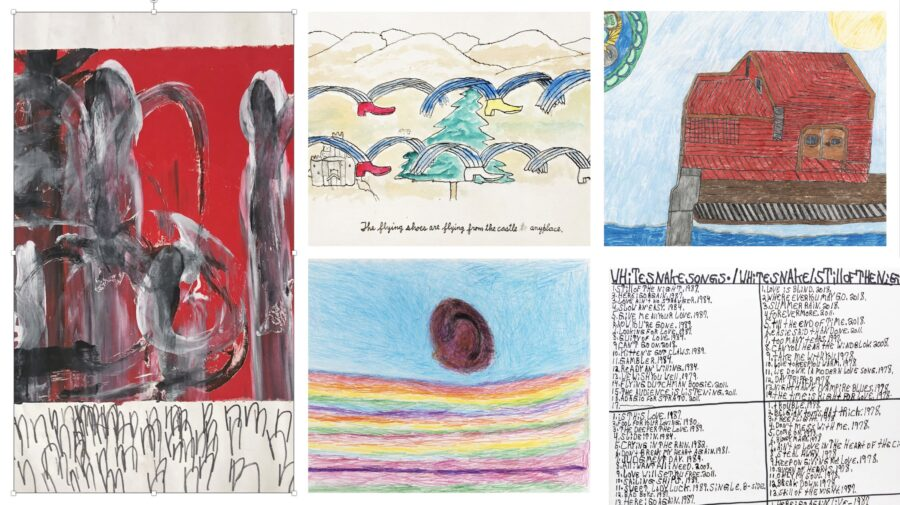

Something in the Air
Something in the Air
“Fragments are the only forms I trust” – Donald Barthelme
When we attempt to describe our experiences, we often do so anecdotally… with a fragment of a story, a statement, a life. It can be both limiting and cogent in what it highlights. The best contemporary art may provide fragments–referencing both personal experience and the culture at large–that allow and encourage entrance, introspection and room to connect. The artists in this exhibition tell stories through images, text, and mark-making, reminding us that the most powerful narratives may be those you share in increments, over time. This work often defies strict definition but can answer the questions that give us a sense of identity – What do you love? What makes you laugh? What do you believe? What do you wish for?
Stories can have straight or meandering trajectories or simply be a list of favorite songs. They can be comprised of words and images describing fleeting events or epic feelings. Rhythmic linework can allude to the cadence of storytelling, or even the margins of a page or manuscript, and dynamic color relationships can conjure the intense pleasure of listening to a favorite song.
Like many of the titles chosen by Susan Pasowicz for her work, Something in the Air acknowledges the mysterious nature of time, hinting at dream-like states and connections to the unknown. This seems to collapse the boundary between what has happened and what will happen, reminding us that we breathe in an atmosphere of constantly evolving stories.
Featuring artists from Arts of Life and Little City Foundation
Ariée
Charles Beinhoff